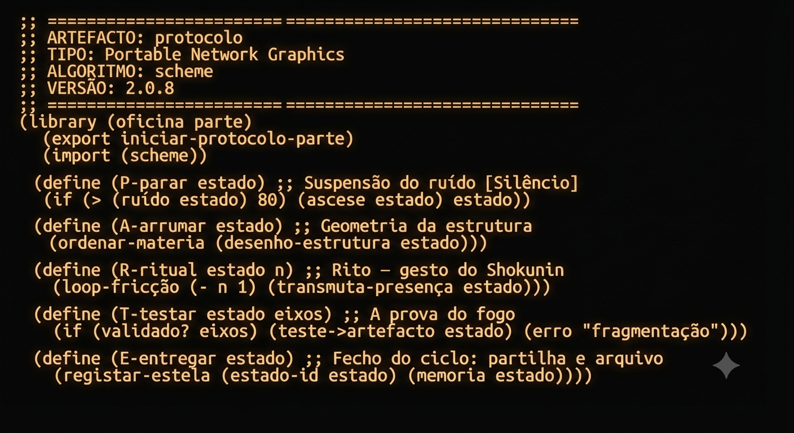

Título: Protocolo
Técnica: Digital, com recurso a IA
Data: 14/09/2026
Apresentação:
Esta lâmina afirma-se como uma um terminal de resistência impresso na treva, onde o fundo negro e a luz âmbar luminescente evocam a arqueologia dos monitores CRT de alta precisão e a ascese da oficina de fabrico. Sob o cabeçalho estrito de metadados (ARTEFACTO: protocolo, VERSÃO: 2.0.8), o texto recusa a lógica mercantil e acolhe-se na soberania do homo faber, desdobrando a sintaxe funcional purificada do código em Scheme como uma armadura contra a dispersão da sociedade contemporânea. Aqui, cada uma das cinco funções do Protocolo P.A.R.T.E — da suspensão do ruído em (P-parar) e da geometria da estrutura em (A-arrumar), passando pelo rito do Shokunin em (R-ritual) e pela prova do fogo em (T-testar), até à partilha e fixação no arquivo em (E-entregar) — converte-se numa instrução de acção, rigor e disciplina para reaver o tempo, o corpo e o domínio sobre a própria existência.
Proposta de Reflexão:
O protocolo P.A.R.T.E. não é nenhuma teoria de gabinete para encher papel; é a ferramenta que trago da terra e da oficina para meteres ordem na cabeça e nas mãos, dia após dia. Quando a brica aperta, a barriga se queixa e o cansaço pesa nos costados, aplicamos isto com o rigor de quem afia um cutelo:
Em suma, a P.A.R.T.E. é o teu compasso diário para saíres da correria cega da sociedade líquida e reconquistar a soberania sobre o teu tempo e o teu corpo.
Notas e Apêndices
-
Leituras prováveis:
- Byung-Chul Han — Do Desaparecimento dos Rituais
- Lucy Lippard — Six Years: The Dematerialization of the Art Object (1973)
- Mohandas Ghandi - O Bhagavad Gita segundo Ghandi
- Noah Wardrip-Fruin — Expressive Processing: Digital Fictions, Computer Games, and Software Studies (2009)
- Richard Sennett — O Artífice (The Craftsman)
- The Scheme Programming Language, 4th Edition
-
Filmes possíveis:
- Chantal Akerman — Jeanne Dielman, 23, quai du Commerce, 1080 Bruxelles (1975)
- Wim Wenders — Dias Perfeitos (Perfect Days, 2023)
Instruções de Geração:
Cria uma imagem gráfica minimalista e brutalista de arte concetual ("Code Art"), concebida como uma lâmina estática de arquivo. - Conceito e Atmosfera: Uma estética de terminal monocromático vintage, a evocar um monitor CRT de fósforo de alta precisão dos anos 70/80 num ambiente de oficina de vanguarda ou scriptorium monástico. O tom é austero, severo e ontológico. - Fundo: Fundo negro fosco absoluto (#050505), denso, profundo e completamente limpo de texturas ou distrações. - Tipografia: IBM Plex Mono (ou fonte monospaced ortogonal e industrial equivalente), com alinhamento rigoroso à esquerda e espaçamento de código perfeito. - Cor do Texto: Luz âmbar luminescente quente (#FFB000) a emanar contra a escuridão, simulando o brilho suave de um ecrã de fósforo âmbar vintage. O texto deve ser nítido, legível e levemente radiante, sem exagerar no efeito de néon. - Composição: Centrada verticalmente e horizontalmente com margens amplas e respiráveis, apresentando estritamente o seguinte bloco de código em Scheme: ;; ===================================================================== ;; ARTEFACTO: protocolo ;; TIPO: Portable Network Graphics ;; ALGORITMO: scheme ;; VERSÃO: 2.0.8 ;; ===================================================================== (library (oficina parte) (export iniciar-protocolo-parte) (import (scheme)) (define (P-parar estado) ;; Suspensão do ruído [Silêncio] (if (> (ruído estado) 80) (ascese estado) estado)) (define (A-arrumar estado) ;; Geometria da estrutura (ordenar-materia (desenho-estrutura estado))) (define (R-ritual estado n) ;; Rito — gesto do Shokunin (loop-fricção (- n 1) (transmuta-presença estado))) (define (T-testar estado eixos) ;; A prova do fogo (if (validado? eixos) (teste->artefacto estado) (erro "fragmentação"))) (define (E-entregar estado) ;; Fecho do ciclo: partilha e arquivo (registar-estela (estado-id estado) (memoria estado)))) - Estilo Visual Geral: Fotografado de frente, plano 2D ortogonal direto (flat lay digital), sem perspetiva 3D, sem artefactos decorativos, sem logótipos adicionais ou molduras externas. Apenas o código luminoso em âmbar sobre a treva.